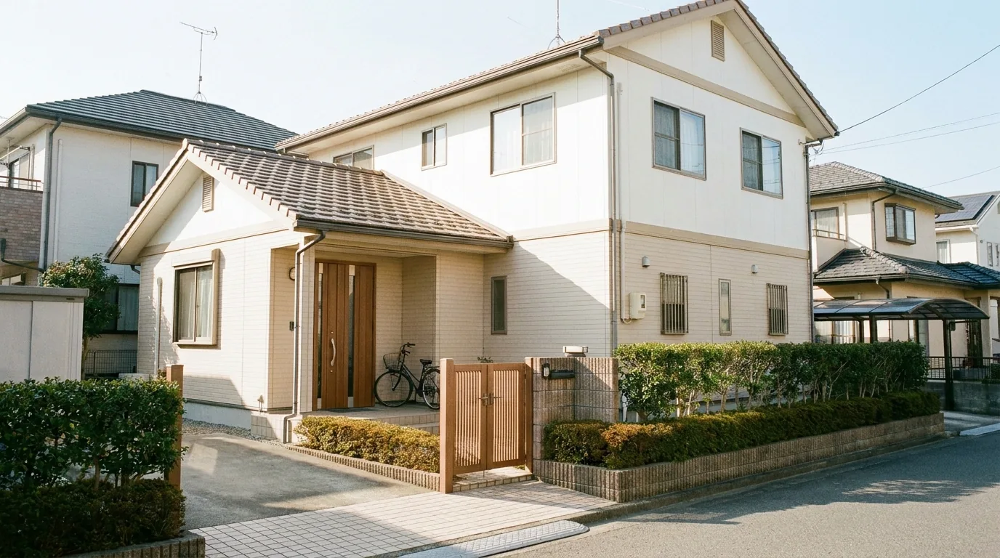

加盟オーナー募集
障がい者グループホームを
障がい者グループホームを
加盟金0円ではじめる。
福祉未経験からの独立・開業でも大丈夫です。
物件探しから行政の指定申請、開業後の運営・入居者募集まで、専属スタッフが伴走します。
- 加盟金 0円
- 月額固定のみ
- 自己資金の目安 約230〜560万円
- 未経験スタート ◯割
※ 収益・期間の数値はいずれも一定の前提を置いたモデルケースです。実際の結果を保証するものではありません。
